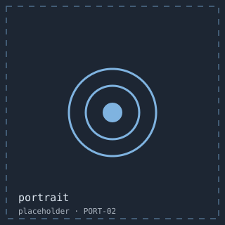

About
I am Priya Raman, a frontend engineer in Boston, Massachusetts who spends most of her time on the parts of an interface nobody photographs.

Ten years in, my work splits in two. Four days a week I build and maintain a design system: component APIs, a keyboard model, a focus specification, and the review habits that keep six teams from solving the same problem six ways. The rest goes into small things of my own — a tab editor, a departures board, an editor theme — which is where I learn the things I later apply at work.
How I work
Accessibility is the brief, not the audit
Focus order, names and keyboard paths go in the first commit. I have never seen an accessibility pass at the end of a project come in cheaper than doing it first, and I have now watched four teams try.
Measure the argument
“That contrast is fine” and “this feels slow” are both unanswerable until someone brings a number. Most of my useful work has been turning a taste argument into a measurable one, then letting the measurement decide.
Small, reviewable pieces
I would rather hand you five small pull requests than one large one, and a prototype on Friday rather than a specification in March.
Teach while building
Documentation, pairing and a fortnightly session where the team tries to break its own interface. The session has found more bugs than any audit I have commissioned.
Before this
Brightwall, Fieldhouse, Scoutline, Lumen & Co, Tidemark, and now Keelpoint — agency work first, product work since 2021. The resume has the dates; the archive has what I actually shipped.
Outside the browser
Classical guitar, badly but persistently, which is how Fretboard happened. A long-running argument with a sourdough starter. Volunteer accessibility reviews for two local non-profits, which keeps me honest about how the rest of the web actually works.